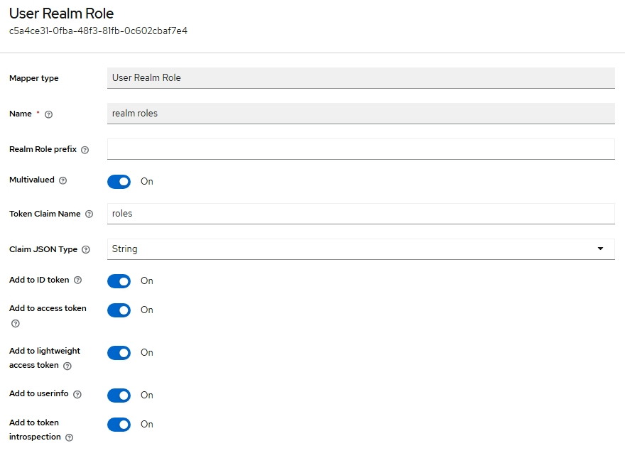
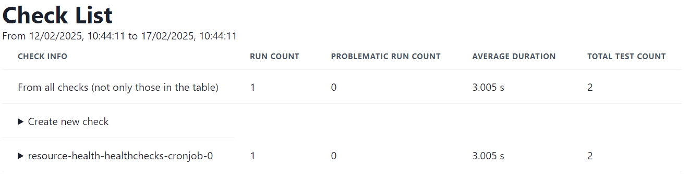

Resource Health Deployment Guide⚓︎
The Resource Health Building Block (BB) provides a flexible framework for monitoring the health and status of resources within the EOEPCA platform. This includes core platform services as well as derived or user-provided resources such as datasets, workflows, or user applications.
Introduction⚓︎
The Resource Health BB allows you to:
- Define and schedule automated health checks (e.g. daily, hourly).
- Observe and visualise check outcomes via a web dashboard.
- Integrate with external services (e.g. IAM for OIDC authentication, Data Access, Resource Catalogue).
- Store results in OpenSearch, optionally visualizing them using OpenSearch Dashboards.
- Collect telemetry via OpenTelemetry, enabling advanced monitoring and alerting.
Components Overview⚓︎
- Resource Health Web
- Dashboard and front-end for viewing health checks and results.
- By default, can be secured with OIDC authentication (e.g. via Keycloak).
- Resource Health API(s)
- Telemetry API for gathering check results and metrics.
- Health Checks API (Check Manager) for listing, scheduling, and managing checks.
- Health Check Runner
- A flexible engine that executes your custom health checks at scheduled intervals.
- Mock API (optional sample)
- An example test resource used in demonstration checks (e.g. an hourly check to a mock endpoint).
- OpenSearch & OpenSearch Dashboards
- Stores logs, results, and trace data from your checks.
- Provides advanced visualisation and analytics features.
- OpenTelemetry Collector
- Receives telemetry from health checks and forward them to OpenSearch.
Prerequisites⚓︎
Before deploying the Resource Health Building Block, ensure you have the following:
| Component | Requirement | Documentation Link |
|---|---|---|
| Kubernetes | Cluster (tested on v1.32) | Installation Guide |
| Git | Properly installed | Installation Guide |
| Helm | Version 3.5 or newer | Installation Guide |
| Helm plugins | helm-git: Version 1.3.0 tested |
Installation Guide |
| kubectl | Configured for cluster access | Installation Guide |
| Ingress Controller | Properly installed (e.g., NGINX) | Installation Guide |
| Internal TLS Certificates | ClusterIssuer for internal certificates | Internal TLS Setup |
Clone the Deployment Guide Repository:
Validate your environment:
This script checks common prerequisites, including your Kubernetes/Helm installation, Git, and any required Helm plugins.
Deployment Steps⚓︎
1. Run the Configuration Script⚓︎
The configure-resource-health.sh script gathers basic configuration inputs (such as your internal ClusterIssuer for TLS, storage class, etc.) and generates a generated-values.yaml that tailors the Resource Health deployment to your environment.
During execution, you will be prompted for:
INGRESS_HOST: Hostname.INTERNAL_CLUSTER_ISSUER: Name of the cert-manager ClusterIssuer for internal TLS. (Default:eoepca-ca-clusterissuer)PERSISTENT_STORAGECLASS: Storage class for persistent volumes. (Default:standard)
2. Create a Keycloak Client⚓︎
A Keycloak client is required for the ingress protection of the Processing BB OAPIP Engine. The client can be created using the Crossplane Keycloak provider via the Client CRD.
source ~/.eoepca/state
cat <<EOF | kubectl apply -f -
apiVersion: v1
kind: Secret
metadata:
name: ${RESOURCE_HEALTH_CLIENT_ID}-keycloak-client
namespace: iam-management
stringData:
client_secret: ${RESOURCE_HEALTH_CLIENT_SECRET}
---
apiVersion: openidclient.keycloak.m.crossplane.io/v1alpha1
kind: Client
metadata:
name: ${RESOURCE_HEALTH_CLIENT_ID}
namespace: iam-management
spec:
forProvider:
realmId: ${REALM}
clientId: ${RESOURCE_HEALTH_CLIENT_ID}
name: Resource Health
description: Resource Health OIDC
enabled: true
accessType: CONFIDENTIAL
rootUrl: ${HTTP_SCHEME}://resource-health.${INGRESS_HOST}
baseUrl: ${HTTP_SCHEME}://resource-health.${INGRESS_HOST}
adminUrl: ${HTTP_SCHEME}://resource-health.${INGRESS_HOST}
serviceAccountsEnabled: true
directAccessGrantsEnabled: true
standardFlowEnabled: true
oauth2DeviceAuthorizationGrantEnabled: true
useRefreshTokens: true
authorization:
- allowRemoteResourceManagement: false
decisionStrategy: UNANIMOUS
keepDefaults: true
policyEnforcementMode: ENFORCING
validRedirectUris:
- "/*"
webOrigins:
- "/*"
clientSecretSecretRef:
name: ${RESOURCE_HEALTH_CLIENT_ID}-keycloak-client
key: client_secret
providerConfigRef:
name: provider-keycloak
kind: ProviderConfig
EOF
The Client should be created successfully.
3. Deploy the Resource Health BB (Helm)⚓︎
- Apply Secrets
- Install or upgrade Resource Health
Note: While the Resource Health BB is not yet in the official EOEPCA Helm charts, you can install it directly from the GitHub repository.
-
Clone the Resource Health repository and update dependencies:
-
Install or upgrade the Resource Health Helm chart:
As part of this deployment, you will have a preconfigured healthcheck that runs every minute.
3. Configure Ingress⚓︎
By default, Resource Health is designed to be flexible with Ingress and OIDC configurations.
For the purpose of this guide, the configuration script created a sample Ingress resource in generated-ingress.yaml that you can apply or adapt to your environment. The output depends on the ingress controller you have set in the ~/.eoepca/state file.
- APISIX
kubectl apply -f apisix/plugin-api-auth.yaml -n resource-health
kubectl apply -f apisix/plugin-browser-auth.yaml -n resource-health
kubectl apply -f generated-ingress.yaml -n resource-health
- Nginx
4. Configure Keycloak Client⚓︎
To ensure your Keycloak user has proper permissions in OpenSearch, you must configure role mapping explicitly.
Step 1: Create a Keycloak Realm Role⚓︎
- Log into your Keycloak (
auth.${INGRESS_HOST}). - Navigate to your realm (
eoepca). - Click on Realm Roles, then click Create Role.
- Create a new role named
opensearch_user
Step 2: Assign the Role to your Keycloak User⚓︎
- Still in Keycloak, go to Users and select your user (e.g.
eoepcauser). - Click on the Role Mappings tab.
- Assign the newly created
opensearch_userrealm role to this user.
Step 3: Add the Realm Role Mapper to your Keycloak Client⚓︎
- Go to Clients and select your
resource-healthclient. - Navigate to Client Scopes → resource-health-dedicated and click Add Mapper.
- Configure the
User Realm Roletemplate mapper as follows:
| Field | Value |
|---|---|
| Mapper Type | User Realm Role |
| Name | realm roles |
| Multivalued | ON ✅ |
| Token Claim Name | roles |
| Claim JSON Type | String |
| Add to ID token | ON ✅ |
| Add to Access token | ON ✅ |
| Add to Userinfo | ON (recommended) ✅ |
This configuration ensures Keycloak will correctly include realm roles in the JWT.

4. Monitor the Deployment⚓︎
Once deployed, you will have to wait a minute until the first health check runs before you can access the Resource Health Web dashboard.
After the Helm installation finishes, check that all pods are running in the resource-health namespace:
Validation⚓︎
- Run the validation script:
- Verify the APIs are responding:
# Check the Health Checks API
curl -s "https://resource-health.${INGRESS_HOST}/api/healthchecks/" | jq
# Check available templates
curl -s "https://resource-health.${INGRESS_HOST}/api/healthchecks/v1/check_templates/" | jq '.data[].id'
# Check the Telemetry API
curl -s "https://resource-health.${INGRESS_HOST}/api/telemetry/" | jq
- Access the Resource Health Web:
Access the Resource Health Web dashboard at:

Usage⚓︎
Understanding Health Check Templates⚓︎
Health check templates define reusable patterns for common monitoring scenarios. View available templates:
curl -s "https://resource-health.${INGRESS_HOST}/api/healthchecks/v1/check_templates/" | jq '.data[] | {id: .id, label: .attributes.metadata.label, description: .attributes.metadata.description}'
The default deployment includes: - simple_ping - Checks if an endpoint responds with an expected HTTP status code - generic_script_template - Runs custom pytest scripts for advanced health checks
Creating Health Checks via API⚓︎
The Resource Health API uses JSON:API format. Here’s how to create a health check:
1. Create a health check definition:
cat <<EOF > healthcheck.json
{
"data": {
"type": "check",
"attributes": {
"schedule": "*/5 * * * *",
"metadata": {
"name": "my-service-check",
"description": "Check if my service is responding",
"template_id": "simple_ping",
"template_args": {
"endpoint": "https://my-service.example.com/health",
"expected_status_code": 200
}
}
}
}
}
EOF
2. Register the health check:
curl -X POST "https://resource-health.${INGRESS_HOST}/api/healthchecks/v1/checks/" \
-H "Content-Type: application/vnd.api+json" \
-d @healthcheck.json | jq
3. Verify the check was created:
# List all checks
curl -s "https://resource-health.${INGRESS_HOST}/api/healthchecks/v1/checks/" | jq '.data[] | {id: .id, name: .attributes.metadata.name, schedule: .attributes.schedule}'
# View the corresponding CronJob in Kubernetes
kubectl get cronjobs -n resource-health
Triggering Health Checks Manually⚓︎
Instead of waiting for the scheduled time, you can trigger a health check immediately:
# Get the check ID
CHECK_ID=$(curl -s "https://resource-health.${INGRESS_HOST}/api/healthchecks/v1/checks/" | jq -r '.data[0].id')
# Create a manual job from the CronJob
kubectl create job --from=cronjob/${CHECK_ID} manual-check -n resource-health
# Wait for completion and view results
kubectl wait --for=condition=complete job/manual-check -n resource-health --timeout=120s
kubectl logs job/manual-check -n resource-health --all-containers | tail -20
Viewing Health Check Results⚓︎
Via Telemetry API:
Via Web Dashboard:
Visit https://resource-health.${INGRESS_HOST} to see all health checks and their results in a visual interface.
Deleting Health Checks⚓︎
# Get the check ID you want to delete
CHECK_ID=$(curl -s "https://resource-health.${INGRESS_HOST}/api/healthchecks/v1/checks/" | jq -r '.data[] | select(.attributes.metadata.name=="my-service-check") | .id')
# Delete the check
curl -X DELETE "https://resource-health.${INGRESS_HOST}/api/healthchecks/v1/checks/${CHECK_ID}"
# Verify deletion
curl -s "https://resource-health.${INGRESS_HOST}/api/healthchecks/v1/checks/" | jq '.data[].attributes.metadata.name'
Defining Health Checks via Helm⚓︎
Health checks can also be pre-configured in the Helm values. Add templates under resource-health.healthchecks.templates:
resource-health:
healthchecks:
use_template_configmap: True
templates:
my_custom_template.py: |
import check_backends.k8s_backend.template_utils as tu
CUSTOM_SCRIPT = """
import requests
from os import environ
def test_custom_check():
response = requests.get(environ["TARGET_URL"])
assert response.status_code == 200
assert "expected_content" in response.text
"""
class CustomCheckArguments(tu.BaseModel):
model_config = tu.ConfigDict(extra="forbid")
target_url: str = tu.Field(json_schema_extra={"format": "textarea"})
CustomCheck = tu.simple_runner_template(
template_id="custom_check",
argument_type=CustomCheckArguments,
label="Custom Check Template",
description="A custom health check template",
script_url=tu.src_to_data_url(CUSTOM_SCRIPT),
runner_env=lambda template_args, userinfo: {
"TARGET_URL": template_args.target_url,
},
user_id=lambda template_args, userinfo: userinfo["username"],
otlp_tls_secret="resource-health-healthchecks-certificate",
)
Apply the updated configuration:
helm upgrade resource-health reference-repo/resource-health-reference-deployment \
-f generated-values.yaml \
-n resource-health
Creating Health Checks via Web UI⚓︎
- Visit the Resource Health Web dashboard at
https://resource-health.${INGRESS_HOST} - Click on Create new check
- Select a template (e.g., “Simple ping template”)
- Fill in the required fields:
- Name: A descriptive name for your check
- Description: What this check monitors
- Schedule: A cron expression (e.g.,
*/5 * * * *for every 5 minutes) - Template Arguments: Endpoint URL, expected status code, etc. - Click Create to register the health check
The check will immediately appear in the dashboard and begin running according to its schedule.
---
## Uninstallation
To remove all Resource Health components and the namespace:
```bash
helm uninstall resource-health -n resource-health
kubectl delete namespace resource-health